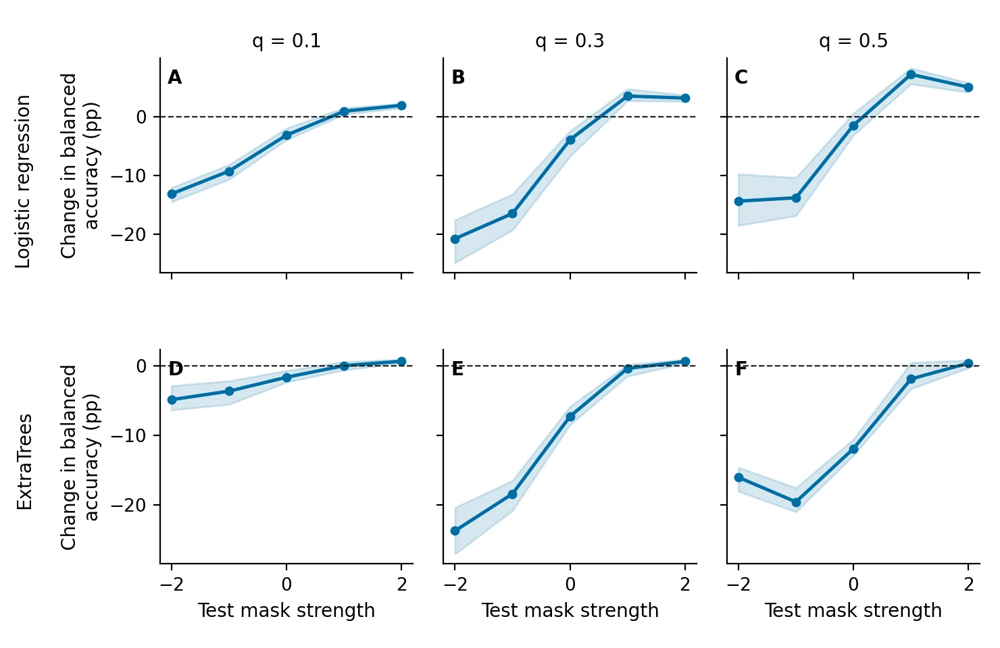
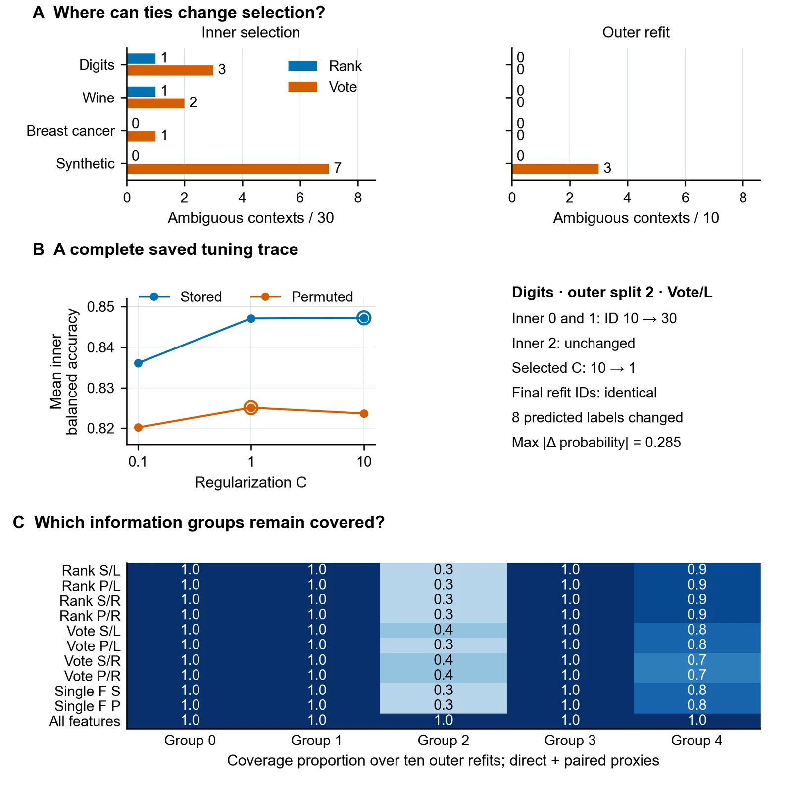
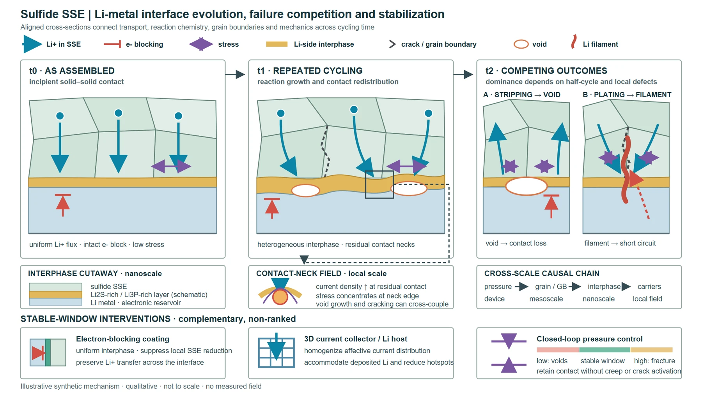
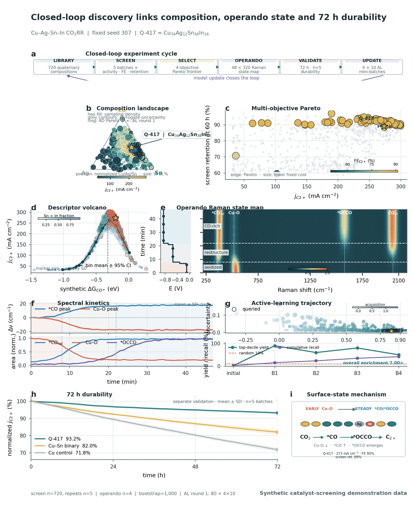
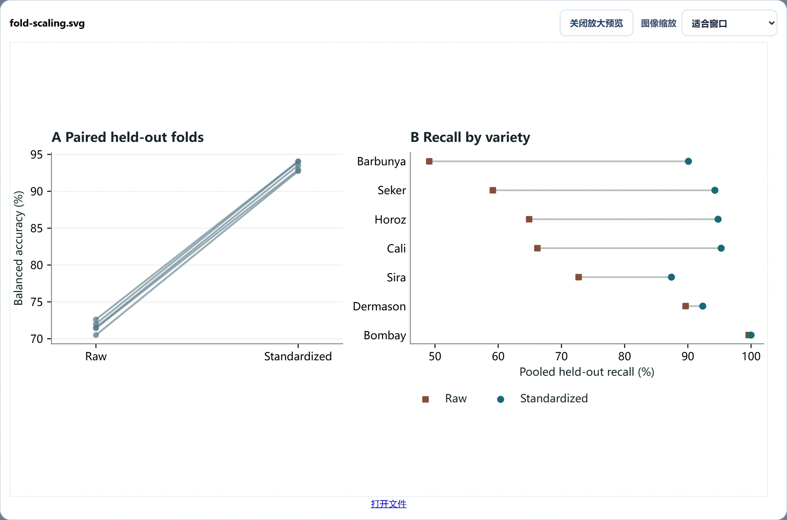
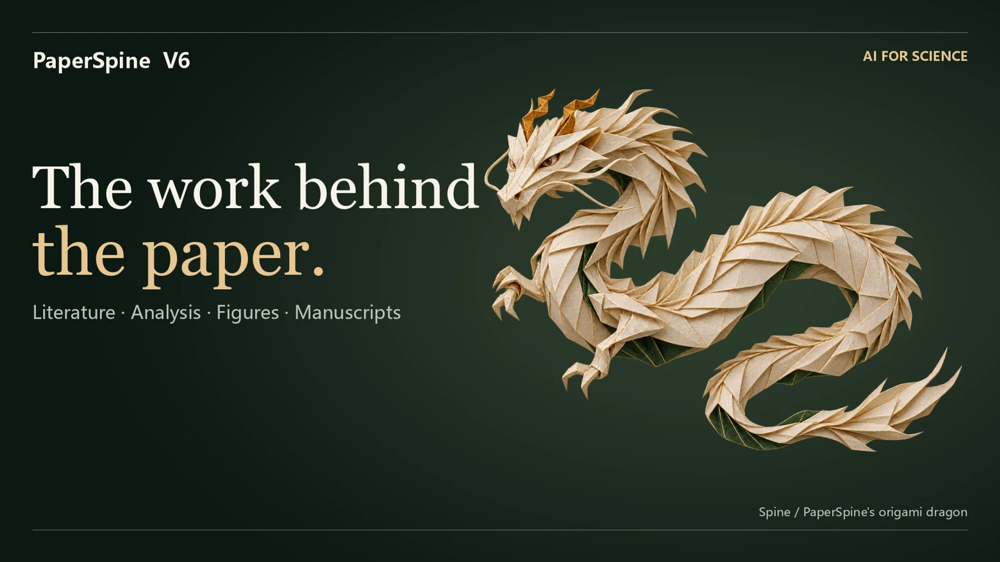

从问题推进到论文
全流程 Skill
把研究问题、结果目录或初稿交给宿主，调用 $paper-spine，再确认需要推进的研究或写作范围。
能得到什么
按范围交付文献和证据记录、分析、科研图和可编辑稿件。
$paper-spine
支持 Skill 的宿主
@SKILL_SIZE@
从一次对话开始，也可以独立调用任意阶段，或在本地界面审查同一篇论文。
从问题推进到论文
把研究问题、结果目录或初稿交给宿主，调用 $paper-spine，再确认需要推进的研究或写作范围。
按范围交付文献和证据记录、分析、科研图和可编辑稿件。
$paper-spine
支持 Skill 的宿主
@SKILL_SIZE@
单独调用需要的环节
安装全流程入口和五个独立阶段 Skill。只想修一段、重画一幅图或审阅现稿时，可以从现有结果开始。
引用对照的改稿、可编辑图件、审阅意见或论文交付包。
$paper-spine-followwriting
支持 Skill 的宿主
@PACK_SIZE@
在本地工作台审查论文
从宿主打开论文任务，在工作台保存设置、比较图件、预览文件并提交返修意见。
保存选择、反馈和预览，下载同一论文任务的文件。
$paper-spine-web:paper-spine-web
Windows x64 · Codex
@WEB_SIZE@
安装管理器支持整版更新和回退。卸载时保留论文、研究文件和本地任务。
V6 实跑 · 三个 Codex 子 Agent
三个子 Agent 分别安装一种 V6 发行包，检验只在训练折拟合的标准化如何影响固定的 7 近邻分类器。在 13,543 条 Dry Bean 公开记录上复算得到同一组结果。
71.62% → 93.46%五个配对折的平均平衡准确率
两项已完成的研究，附原始图和论文。另有材料科学与催化方向的公开制图案例。
受控压力测试 · 公开测量数据
给定研究问题和公开数据来源，Agent 用 UCI Dry Bean 测量数据设计缺失模式变化实验，比较两个分类器，并交付图件和可编辑论文。
13,543 条去重样本 · 2,160 个评估单元
在 30% 人工缺失率下，为逻辑回归加入缺失指示变量。训练测试机制一致时平衡准确率增加 3.14 个百分点，机制反转时下降 20.75 个百分点。

实现诊断 · 三个公开数据集及一个合成条件
Agent 在重复嵌套评估中追踪特征选择，定位了正文中一个由阈值并列传导到后续预测的具体实例。
每个条件 10 个外层划分 · 保留完整调参轨迹
在 Digits 的一次划分中，列顺序变化使调参结果从 C = 10 变到 C = 1。最终选中的特征 ID 相同，仍有八个样本的预测标签发生变化。

可编辑图件，适合讲清研究设计、机理和多面板结果。

机理示意

模拟数据可视化
查看真实 Windows 工作台，再按需播放各项功能的简短演示。

可直接引用的项目简介、带图注的科研图、折纸龙 Spine 和可用作转场的功能短片。
PaperSpine 是一个开源的 AI for Science 研究工作流。它把文献、分析、科研图与可编辑论文放在同一个研究项目里。研究者可以用一个 Skill 跑全流程，按需要单独调用写作、制图或审阅阶段，也可以在 Codex 的本地工作台审查同一篇论文。
Spine · PaperSpine 的折纸龙
下载透明底原图 ↓
